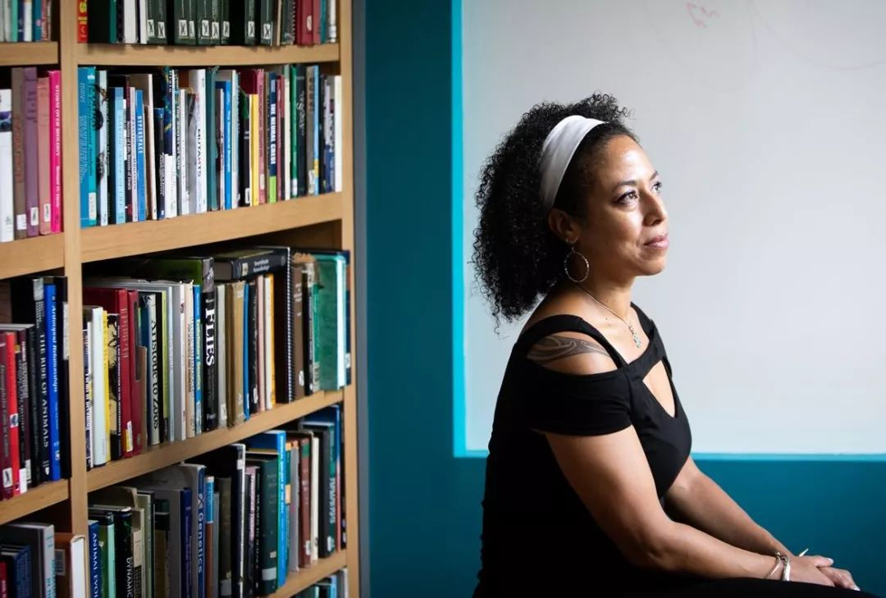
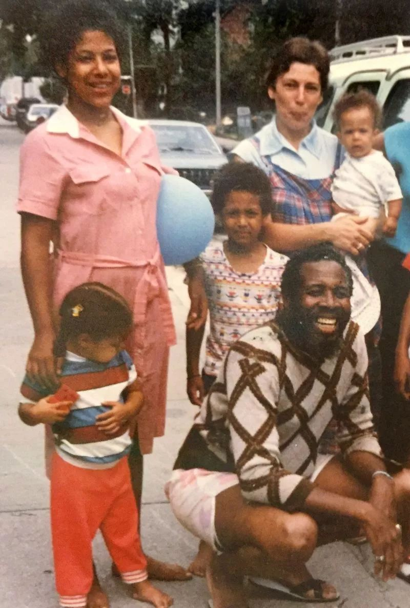
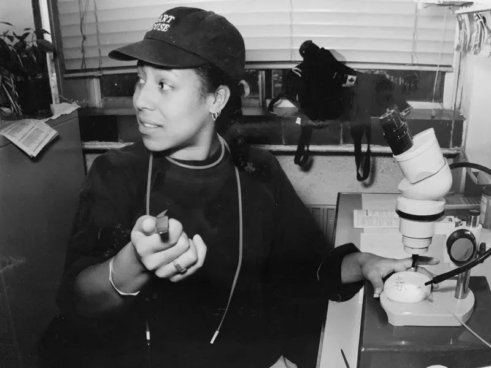

Cassandra Extavour改变了人们对发育生物学的认知，同时还发展了自己女高音歌手的副业。
到1998年的春天，Cassandra Extavour花了两年多时间也没有拿到博士学位。她从家乡加拿大多伦多搬到了马德里的一个开创性实验室，试图设计果蝇卵使之具有两种不同的基因构成。她在无人帮助的情况下需要解决项目中层出不穷的各种问题。如果在接下来的几个月内她不能成功繁育出所需要的果蝇，她就必须停止这个项目。
她和导师经历了几十次失败后想出了最后一个点子，用不同的变异基因繁育果蝇。导师安慰她说这不会产生任何有害影响，但也不会得到指向性数据。即使时间不多，Extavour也不愿听导师的话放弃。接下来几个月中她进行了一系列的实验证明她基因方面的猜想。在这个过程中，她建立了自己的工具来探讨一个以前没人研究过的问题。“这是我真正喜欢的项目，”她说。
二十年后，Extavour研究发育生物学的一些最基本方向时，仍坚持自己提出的研究命题，推翻传统的观念。在马萨诸塞州的哈佛大学实验室，Extavour想了解单细胞生物是如何在进化过程中发展成多细胞生物的，以及这些生物复杂的身体构造是如何从具有相同遗传信息的细胞发展而来的。“我从来没有听说过比这更有趣的问题，”她说。

图片来源：Juliette Halsey 为自然杂志拍摄
Extavour的好奇心和严谨的思考方式使她对关于生长和进化的普适性假设进行了检验，发现某些情况下这些假设是错误的。她推翻了“大多数动物产生卵子和精子前体”的主要理论，在本周的《自然》杂志上，她和她的团队破解了一个关于虫卵多样性的遗留问题。
正像管弦乐队演奏一首优美的协奏曲一样，一套精妙平衡的基因控制着一个生物体的形态和功能。Extavour比大多数人更欣赏这一点：她在担任女高音的同时，也在处理科学问题。在改写科学学说的同时，她也在波士顿与专业乐队合作演出，并出现在加拿大、西班牙的歌剧和合唱团中。
大多数研究人员的研究对象是少数几个经过充分研究的动物，例如果蝇和老鼠，Extavour的成功来自于她对跳蚤和蟋蟀这一类不太常见的实验室动物的偏爱。典型的模式生物只拥有自然界多样性的一小部分，因此除了对固化观点坚持怀疑态度之外，她还研究了各种各样揭示进化最常用遗传工具的动物。
在科学领域经历过种族主义和偏见的她也成为了多样性和包容性的倡导者。即使在成为终身教授之后，她仍然会遇到那些认为她不足够得到这些的人。她花时间指导来自少数群体的学生，并帮助建立了泛美进化发展生物学学会，该学会汇集了来自美洲各地数百名研究人员。
维也纳复杂性科学中心的进化生物学家Johannes J_ger在她的博士后期间与Extavour合作，她说：“这是一个艰难的项目，但对于Extavour，一切皆有可能的。她的成长轨迹、背景，进入科学领域的过程和研究方法并不典型的。她的研究方法是分红。她研究了一群非常不寻常的生物，打破传统，获得成功。”
和谐的开端
从Extavour幼儿时代起，音乐就一直存在于她的生活中。反而科学是十分偶然才出现的。
上世纪60年代她的父亲从Trinidad&Tobago搬到加拿大，是一名广播技术员和打击乐器演奏家。他在音乐会上演奏，也和他的四个孩子一起在地下室练习，他们一起居住在位于多伦多市中心这个带有地下室的三居室中。Extavour演奏的第一件乐器是钢鼓（steeldrum），在小学时期学会读谱后从图书馆借来乐谱自学长笛。大学时期，Extavour在管弦乐和双重奏中表演，并开始古典歌唱。把唯一明确的职业目标定为音乐家”。

Cassandra Extavour（粉红色连衣裙）和她的家人在1986年。图片来来源：Cassandra Extavour
一位高中朋友让她对大脑工作机制产生了兴趣，在本科结束时，她转向分子遗传学的研究方向。在多伦多大学，Extavour转向音乐，与巴洛克管弦乐队合作举办了她的第一次专业演唱会，并在夏季担任了发育生物学家约瑟夫·库洛蒂（Joseph Culotti）的行政助理。在这里Extavour第一次听到了成为她研究方向的问题——基因如何控制生物体的生长和发育。
第二年夏天，她作为研究实习生回到库洛蒂的实验室。她共事的天才所吸引，决定继续研究生的工作的同时坚持歌唱演员的事业。
在马德里攻读博士期间，Extavour一直在努力打破工程师的职业天花板。但这并不是她面临的唯一挑战。尽管她的导师对她和其他学生没有什么不同，但她作为实验室里第一个也是唯一一个女学生感到孤独。
这是一种熟悉“局外人”的感觉。Extavour表示：“我不像典型的科学家形象。”Extavour的父亲作为多伦多工作场所少数几个黑人雇员之一也曾经历过歧视，这帮助她培养了韧性。每次有人对她作出种族主义或歧视性的评论，她都会给父亲打电话。“他会提醒我，不能让这些事情阻止我去做想做的事情。”
但她的目标还是在不断变化。在她博士时期快要结束的时候，Extavour考虑把研究放在一边，全职唱歌。“在一天结束的时候，我为人们表演的感觉可能比我发现新事物时的感觉要好，”她说。
但她最终决定和剑桥大学的动物学家和胚胎学家迈克尔·阿卡姆一起做博士后。她开始研究原始生殖细胞（卵和精子的前体）的机制是如何代际（acrossanimal）进化的。她组织了他的实验室，并列出详尽的试剂清单。迈克尔说：“她让每个人的生活都变得更好。同时她也是一个非常严谨的思想家。在会议期间，她不会放过那些并不严格的数据。”
Extavour在2018年在波士顿表演。图片来源：亨德尔和海顿学会
在剑桥，Extavour发表一篇论文，推翻了发育生物学中一个被广泛接受的假设。普遍的理论认为，由于大多数动物的生殖细胞的来源是发育早期从母体遗传。流行的模式生物（比如苍蝇和蛔虫）都以这种方式产生它们的生殖细胞。但在老鼠发育过程中这些细胞形成的时间较晚，是在信号诱导胚胎的一些细胞朝着在雌性体内形成卵细胞或在雄性体内形成精子时。
为了进一步研究，Extavour首次对现有数据进行了的回顾，这些数据涉及到了从水母到海龟等各种生物的生殖细胞的形成机制。她阅读了1000多篇关于生殖细胞的学术论文，在其中近300篇论文中，她发现了有关生殖细胞起源的相关信息，这使她得出结论：生殖细胞形成最常见的也可能是进化论中最古老的方法——是在老鼠身上看到的过程。
加拿大蒙特利尔麦吉尔大学的进化生物学家Ehab Abouheif说，这篇论文激发了人们对各种动物生殖细胞进化的兴趣，并帮助推动了“Evo Devo”社区（一个对进化和发展规则感兴趣的科学家网络）。Extavour培育了一系列不寻常的模式生物，如海葵和海胆——这种比较方法成为了她研究的核心。
2007年，Extavour搬到哈佛用自己的实验室研究生殖系统的进化和发展。在过去的12年里，她分析了多种动物生殖细胞形成的遗传机制，并利用这些机制来研究在相同的起始遗传信息及物质条件下，细胞如何具有不同的特性。
在2014年和2016年，她的研究小组研究了蟋蟀生殖细胞的起源，发现触发生物体形成卵或精子的细胞发育分子信使与mice3,4中观察到的相同。这一发现支持了古老生物信号系统理论，这个生物信号系统遗传自老鼠和蟋蟀的存在于5亿年前共同祖先。
Extavour正在研究双尖嘴蟋蟀，以研究其基因是如何在一段时间内促进发育和变化的。她的一个研究生发现，蟋蟀的基因组中含有一种叫做Oskar的果蝇基因，这种基因对生殖细胞的产生至关重要，被认为是进化上的“年轻”基因5。
在蟋蟀的基因组中发现一个类似奥斯卡的基因表明这个基因实际上相当古老，因为在进化过程中，蟋蟀比果蝇更早地从其他大多数昆虫中分裂出来。她怀疑奥斯卡基因早期与昆虫的大脑和神经系统的发展有关，只是在进化中成为形成生殖细胞的重要基因。

Cassandra Extavour在20世纪90年代的实验室工作台上。图片来源：Hugh Extavour
“影响重大的发现！”阿布海夫说。了解Oskar基因是如何被重新利用的，可以揭示基因是如何进化和促进新的发育过程。
Extavour也用她的标志方法重新审视了进化原则：对比成堆的新数据和现有数据。在本期《自然》杂志上发表的一项研究中，她的团队挑战了一个长期存在的假设，即昆虫卵的形状和大小随时间的变化。
Extavour说，所有昆虫卵都有相同的功能——保护幼体和为正在发育的昆虫提供能量——但是它们各种各样的形状和大小已经困扰了生物学家几个世纪。一些人认为这些特征与成年动物的体型或胚胎发育的时间有关，但没有完整的研究成果来检验证明这些假说。
因此，她和她的团队仔细研究了大量科学文献，并创建了一个包含10000多种昆虫卵信息的数据库，这些昆虫卵的形状从近乎完美的球形到香蕉形，大小也有很大的差别：有的比灰尘小有的却比蓝莓大。
研究人员寻找了卵的形状、大小和成虫生物特征之间的联系，包括昆虫产卵的地点和受精卵变成幼虫所需的时间。有了一个令人惊喜的发现：虫卵的形状和大小的进化很大程度上取决于蛋产在哪里。在水中产卵通常是小的和球形的；那些产在另一种动物体内的卵也很小，但形状很千奇百怪。
华盛顿州立大学昆虫生理学家和进化生物学家劳拉·拉文说，这一发现挑战了有关卵大小和成虫体型联系的古老假设。许多科学家认为这些尺寸关系是“老故事的结局”，拉文说“现在的新故事从这项研究开始，”了解卵细胞如何随环境变化，可以发现一些对动物生长和进化的主要制约因素。
Extavour希望观察昆虫的卵、胚胎和生殖系统能帮助她了解第一批多细胞生物进化的规律。弄清楚为什么具有相同DNA的细胞在不同的环境中做不同的事情，哪些程序产生精子细胞，或者什么控制着卵的大小，可能有助于解决这个难题。这些问题驱动了哈佛一个共同领导的1000万美元级别研究中心。
许多人期待着Extavour的下一个突破。耶鲁大学的进化生物学家凯西·邓恩说：“她是一个深刻的进化领域思考者。但她也解决了非常细致的生物进化问题。”
种族多样化卫士
2013年11月，Extavour不得不召开一次重要的研讨会，她面对申请哈佛大学任期的最后一个障碍。在展示她的科学成就之前，Extavour提醒观众，直到19世纪70年代末，妇女才能够接受哈佛的教育，100多年过去了，她们才能够获得与男子相同的哈佛大学学位。她说：“如果这件事没有发生，我今天就不会在这里了。”
加州大学戴维斯分校的生物学家，当时是Extavour小组的博士生Didem Sarikaya说，很少有人会注意到自己研究机构的麻烦历史。但Extavour长期以来一直站在代表和支持那些历史上被排除在科学之外的人的立场上。哈佛大学黑人科学家和工程师学会的本科生兼即将上任的主席Rahel Imru说，黑人科学家和工程师常常觉得自己没有归属感，学会成员们经常向他们提供建议和指导。
Extavour说，与黑人学生交流对她自己也很重要。在她的生活中，种族主义是永恒的。在会议上，人们会叫她再倒杯咖啡，当她最近出现在哈佛一栋大楼的门口参加一个商务晚宴时，一名保安以为她在那里提供晚餐，为她指路到服务入口。
“音乐提供了一些安慰，”Extavour说，但朋友和家人是绝对重要的。Extavour的妻子也是一个黑人妇女，Extavour在她那里获得了珍贵的支持。“我们可以理解对方所经历的很多事情。”
Extavour直到博士后才告诉同事她的性取向。她能理解那些以女同性恋、同性恋、双性恋、变性和性少数身份出现的学生可能会感到孤独。她办公室和实验室的门上都贴着彩虹旗，向学生们发出欢迎的信号。她表示：“外出工作很重要，因为这让年轻人看到，成为同性恋有可能外出生活、有工作。”
Extavour的家人让她明白，她不应该让其他人的偏见来定义她能做什么和不能做什么；也激励她为自己应该做什么设定标准。而认识她的人则说，“她目标很高”、“她迎难而上”、“她眼光长远”。
来源：Nature Research
作者：Giorgia Guglielmi
原文链接：
https://www.nature.com/articles/d41586-019-02040-6
翻译：村长
校对：白纸
图片来源于网络，侵权删除。